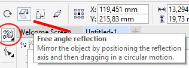

ВОПРОС / ОТВЕТ ДЛЯ НАЧИНАЮЩИХ
polzovatel-902 / 13.07.2010, 09:21/00:41
Форум:
Объясню на примере, чтоб было понятней... Открываю в кореле картинку (футболку с надписью) в формате JPG, мне нужно вытянуть из футболки надпись, т.е разъеденить файл... Говорят нужно формат изменить, еще что-то... Объясните, пожалуйста, что нужно сделать для этого...? Заранее спасибо.
Ээээ, не совсем понял как вращать квадрат до нужного места), и как это поможет мне скопировать туда круг). Но в любом случае просто не выгладит. Дело в том что я думал что есть такая простая команда, и что во всех уроках по Coral её от меня просто скрывают). Но похоже такой команды действительно нет, и Все выходят из положения разными способами(.
Может, и я не знаю такой команды, а она существует) на свете есть еще добрые люди, подождите, еще помогут)
Max257, для Corel это конечно не совсем тривиальная задача. Несколько дополнительных телодвижений придется сделать. Могут быть нюансы при выполнении сего действа. А именно:
1. Одинаковые квадраты или нет;
2. Имеет ли значение положение второго квадрата на листе или оно может быть произвольным.
От этих двух моментов будет зависеть количество телодвижений и ход решения задачи. Т. к. нам это не известно, то предположу, что положение второго квадрата не имеет значения (не задано точными координатами), а размеры квадратов разные.
Итак. Один квадрат с кругом у вас есть. Расстояния от центров квадратов до центра кругов должно быть одинаковым. Значит, Вам можно просто совместить центры квадратов. Для этого есть команда Выровнять и распределить (второй квадрат автоматически разместится так, чтобы их центры совпали). Потом выделяете круг и жмете клавишу "+" на цифровой клавиатуре, получив таким образом копию круга. Теперь Вам остается выделить квадрат с кругом и перетащить их на новое место, где они должны быть.
Max257, Max257,
Для начала следует запомнить что Corel не AutoCAD. ВААПЩЧЕ другой. Поэтому я чертежи, и всё что содержит зеркаливание, копирование, отступ и другое, калякаю в CADe, и потОм Импорт в Corel.
Max257, вы поставили "задачу" и попросили нас найти "решение". А что, если "задача" поставлена не верно? Дайте более общую картину. Мы сами определимся с ее решением - как правило, Корел позволяет это сделать 2-3 различными способами.
Я, например, решил так:
1) скопировал первую пару фигур в положение 2-го квадрата
2) удалил копию 1-го квадрата.
P.S. Да, и что это за простая команда в AutoCAD`e?
По-поводу второго вопроса. Инструмент Free transform (Свободное преобразование) -> Free angle reflection (Отражение под произвольным углом)
Спасибо, за Ваши советы. Более общая картина следующая: Существует частично симметричный рисунок, который требуется дорабатывать. Естественно проще доработать одну часть рисунка и потом отзеркалить её. Однако отзеркаливать относительно произвольной оси симметрии я не умею, по этому приходится потом перемещать её. Причем перемещать на расстояние между первым объектом и осью симметрии я тоже не могу, все приходится делать либо "на глаз", либо использовать различные вспомогательные построения. Я надеялся что возможно есть простые команды (котороых я просто не знаю) для этих действий. В любом случае спасибо за помощь.
PS. Команды копирования и отражения AutoCad'а позволяют отражать и копировать сразу на определенное расстояние (которое можно задать во время выполнения команды различными способами).
Max257, для отзеркаливания (либо поворота) относительно произвольной оси, есть инструмент Free Transform, а на Панели свойств надо выбрать Free angle reflection. Но в разных версиях Corel, эти инструменты располагаются в разных местах. Раньше он был в группе инструментов Shape, а теперь в группе инструментов Pick.

Добрый день! Подскажите, пожалуйста, что это за зеленые линии и как их убрать?
aleka.a@inbox.ru, Ошибка построения контура. Вручную исправлять.
А можно поподробнее? В чем ошибка? Что нужно исправить?
Страницы